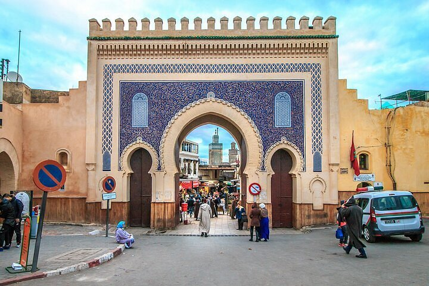
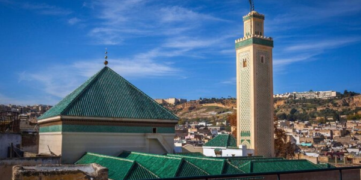
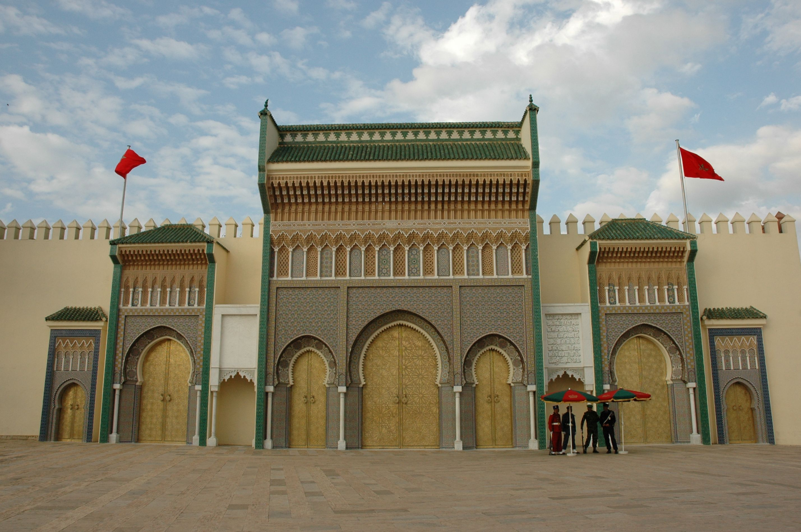
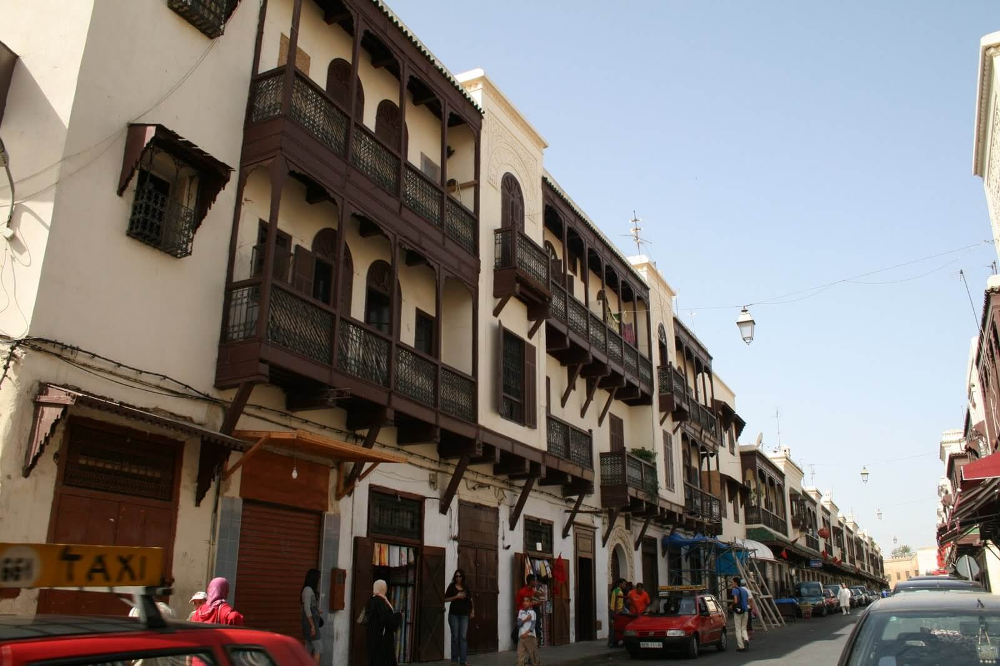

À propos de Fès
Fondée au VIIIᵉ siècle, Fès est la plus ancienne des villes impériales du Maroc et un haut lieu de la culture et de la spiritualité. Sa Médina, l’une des plus vastes du monde, est classée au patrimoine mondial de l’UNESCO.
Faits rapides
- Population: ~1,2M
- Région: Fès-Meknès
- Langues: Arabe, Français
- Patrimoine: Médina classée UNESCO
Culture
Fès est une ville profondément ancrée dans les traditions. Connue pour son artisanat, ses tanneries, ses écoles religieuses et son influence artistique, la ville a joué un rôle majeur dans l’histoire intellectuelle du Maroc.
Son université Al Quaraouiyine est considérée comme la plus ancienne université encore active au monde.
Artisanat
Céramique bleue, bois sculpté et cuivre travaillé.
Tanneries
Chouara, les plus célèbres du Maroc.
Patrimoine religieux
Mosquées, médersas et lieux historiques.
Gastronomie
Pastilla, harira et cuisine traditionnelle raffinée.
Sites incontournables

Bab Boujloud
Porte emblématique de la Médina, connue pour sa mosaïque bleue et verte.
.jpg)
Médersa Bou Inania
Chef-d’œuvre d’architecture mérinide, célèbre pour ses bois et zelliges.
.jpg)
Tanneries Chouara
Les plus célèbres tanneries traditionnelles du Maroc.

Université Al Quaraouiyine
Fondée en 859, considérée comme la plus ancienne université du monde.

Palais Royal de Fès
Façade impressionnante ornée de portes dorées sculptées.

Le Mellah
Ancien quartier juif, riche en histoire et architecture unique.